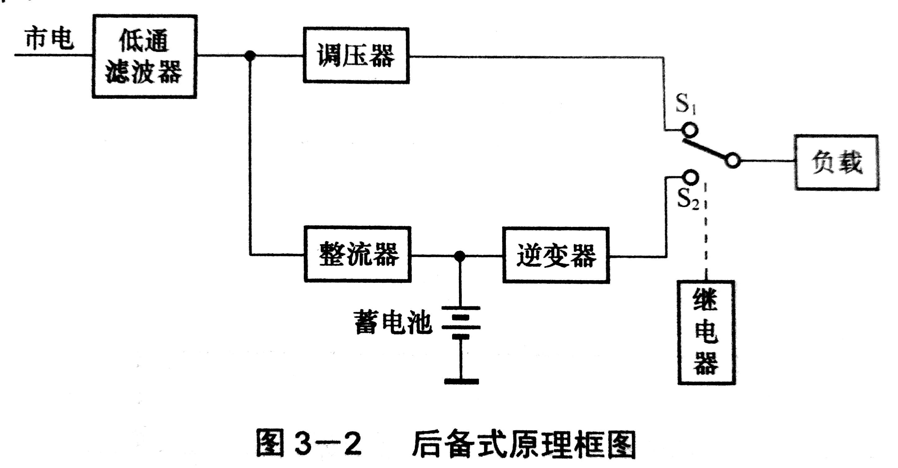
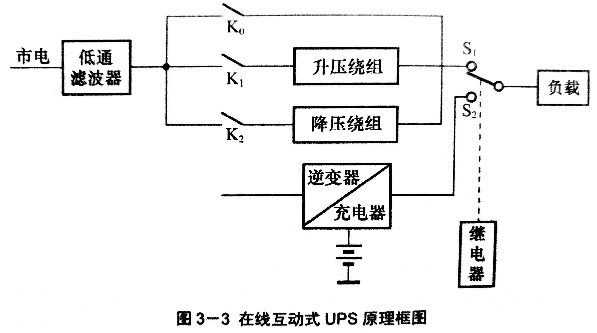
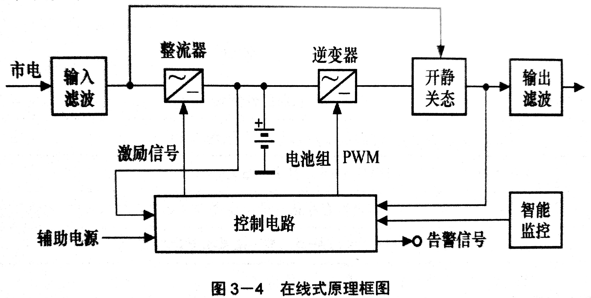

UPS: Uninterruptible Power System，不间断电源系统
防电源不稳定(断电、高电压、低电压)，不允许3-5ms的中断
分类
(1)按原理
后备式: 正常时稳压供电(同时给电池充电)，异常时电池通过
逆变器供电；没有电源净化；(继电器)切电有中断(15ms) 互动式: 正常时稳压供电(同时给电池充电)，异常时电池通过
变换器(逆变器+充电器)供电；电源净化功能差；(继电器)切电有中断(4~8ms) 在线式: 逆变器始终为负载供电；电源完全净化；(静态开关)切电无中断(0ms)；是目前流行方式 
(2)配电方式
- 单进单出: 单线220V进，220V出
- 三进单出: 380V进，220V出
- 三进三出: 380V进，380V出
单指单相电，三指三相电中线应加粗1.5~2倍(因为它要承载大电流)
(3)按逆变器可供电时间
- 标准机型: 15分
- 长延时: > 15分
延长时间方法: 增大电池容量；选购大容量UPS
电池串联，电压变，容量不变
电池并联，电压不变，容量变
工作方式
- 正常工作方式
- 电池逆变器工作方式
- 旁路工作方式: 使用备用线直接接
市电，无电源净化功能
UPS冗余备用
是否具有
容错功能，看负载。
负载功率需要 <并联UPS中每一个单独UPS可提供的功率
同幅度、相位、频率才允许并联
- 1 + 1
- N + 1
系统组成(UPS机柜 + 蓄电池)
- 整流器: 交流 -> 直流 (实现功率因数校正 PFC) (没有反向电流，降低对电网的污染)
- 逆变器: 直流 -> 交流 (通过
开关管的高速动作，输出纯净电流) - 旁路(Bypass): 直接用
市电，不能保护负载 - 电池
工作状态
优先级由高到低
- ECO模式 (节能)
- 市电
- 电池
- 旁路
性能指标
输入功率因数: ; 它是衡量电网是否存在污染的指标
输入电流谐波: 属于
无功功率，能量无法被使用输入频率范围: ...
频率跟踪速率: 一秒钟内能完成的
输出频率改变次数; (输入市电不稳，需要跟踪它的频率，来调整输出)输出电压波形失真度: 输出波形中谐波所占的比率； 实际上就是
非正弦波部分除以总波形输出功率因数: 带非线性负载能力的强弱
UPS输出效率:
三相不平衡能力: 三相电中，
其中一相线路负载其他两路的能量之合的能力输入保护特性: 当输入的电力出了问题，切换到
电池供电或旁路(市电)供电
工作原理
逆变电路(核心)
市电 -> 直流 -> 交流
工作原理:
- 阶梯波逆变器: 利用不同相位的矩形波，叠加成正弦波
- 多脉冲调制: 利用一组
等高不等宽的矩形波来等效正弦波 (能量是相等的) - 正弦脉宽调制(SPWM, Sinusoidal pulse width modulation): 通过频率较高的
三角形载波与可变正弦波组合形成脉冲宽度不等、距离不等、高度相同 矩形波
静态开关
- 转换型, 有短时间的
同时供电过程 - 并联型，没有
同时供电过程
反馈电路

压控振荡器: 受电压控制的振荡器
操作 UPS
正常开机
- 闭合
旁路开关 - 开机
这可以预防
因 UPS 无法正常启动，造成设备快速开关机现象的发生
维修前
- 开启
静态旁路开关 - 通过程序面板，断开
逆变器 - 手动开启
维修旁路开关 - 断开
UPS主线路电流供应开关
维修后
做一次维修前操作的逆过程